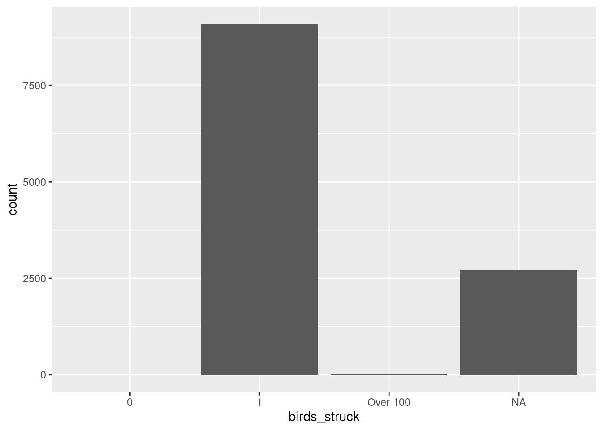

Show code
library(dplyr)
library(ggplot2)
dataset <- read.csv("../../../../data/birds_strikes.csv")Eru
July 16, 2026
This project uses the dplyr and ggplot2 packages in R.
The dataset used is birds_strikes2.csv, which contains information about reported bird strike incidents.
This project investigates bird strikes according to the time of day, phase of flight, number of birds struck, and aircraft height.
Four variables were selected for the analysis. Rows containing missing values or blank cells in these variables were removed before the analysis. After removing missing values and blank cells, 11,827 observations remained for the analysis.
# A tibble: 4 × 2
time_of_day count
<chr> <int>
1 Dawn 437
2 Day 7660
3 Dusk 595
4 Night 3135The categories were reordered to reflect the typical sequence of a flight.
# A tibble: 8 × 2
phase_of_flt count
<fct> <int>
1 Take-off run 1854
2 Climb 2453
3 En Route 331
4 Descent 461
5 Approach 4974
6 Landing Roll 1729
7 Taxi 19
8 Parked 6The categories are reordered in ascending order.
# A tibble: 4 × 2
birds_struck count
<fct> <int>
1 0 2
2 1 9090
3 Over 100 12
4 <NA> 2723
Min. 1st Qu. Median Mean 3rd Qu. Max.
0.0 0.0 100.0 889.8 900.0 25000.0 The distribution was strongly right-skewed, with a small number of observations at very high altitudes. The third quartile was 900 feet, indicating that 75% of bird strikes occurred at or below 900 feet. Therefore, a second histogram limited to 0–1,000 feet was produced to examine the distribution at lower altitudes more closely.
---
title: "Bird Strikes"
author: "Eru"
date: "2026-07-16"
warning: false
format:
html:
code-fold: true
code-summary: "Show code"
code-tools: true
categories: [R, 26Winter, "data: birds_strikes.csv"]
---
## Introduction
This project uses the dplyr and ggplot2 packages in R.
The dataset used is birds_strikes2.csv, which contains information about reported bird strike incidents.
This project investigates bird strikes according to the time of day, phase of flight, number of birds struck, and aircraft height.
```{r}
library(dplyr)
library(ggplot2)
dataset <- read.csv("../../../../data/birds_strikes.csv")
```
## Data preparation
Four variables were selected for the analysis. Rows containing missing values or blank cells in these variables were removed before the analysis.
After removing missing values and blank cells, 11,827 observations remained for the analysis.
```{r}
subset <- dataset %>%
select(time_of_day, phase_of_flt, birds_struck, height) %>%
filter(
!is.na(time_of_day),
time_of_day != "",
!is.na(phase_of_flt),
phase_of_flt != "",
!is.na(birds_struck),
birds_struck != "",
!is.na(height)
)
```
## Descriptive analysis
### Bird strikes by time of day
```{r}
subset %>%
group_by(time_of_day)%>%
summarise(count=n())
```
```{r}
ggplot(subset, aes(x = time_of_day)) +
geom_bar()
```
### Bird strikes by phase of flight
The categories were reordered to reflect the typical sequence of a flight.
```{r}
subset$phase_of_flt <- factor(
subset$phase_of_flt,
levels = c(
"Take-off run",
"Climb",
"En Route",
"Descent",
"Approach",
"Landing Roll",
"Taxi",
"Parked"
)
)
```
```{r}
subset |>
group_by(phase_of_flt)|>
summarise(count=n())
```
```{r}
ggplot(subset, aes(x = phase_of_flt)) +
geom_bar()
```
### Birds strikes by number of birds struck
The categories are reordered in ascending order.
```{r}
subset$birds_struck <- factor(
subset$birds_struck,
levels = c(
"0",
"1",
"2 to 10",
"11 to 100",
"Over 100"
)
)
subset%>%
group_by(birds_struck)%>%
summarise(count=n())
ggplot(subset, aes(x = birds_struck)) +
geom_bar()
```
### Height of bird strikes
```{r}
summary(subset$height)
```
```{r}
ggplot(subset,
aes(x=height))+
geom_histogram()
```
```{r}
ggplot(subset,
aes(y=height))+
geom_boxplot()
```
The distribution was strongly right-skewed, with a small number of observations at very high altitudes. The third quartile was 900 feet, indicating that 75% of bird strikes occurred at or below 900 feet. Therefore, a second histogram limited to 0–1,000 feet was produced to examine the distribution at lower altitudes more closely.
```{r}
ggplot(subset,
aes(x=height))+
geom_histogram()+
xlim(0,1000) +
ylim(0,1500)
```
### Height and number of birds struck
```{r}
ggplot(subset,
aes(x=birds_struck,
y=height))+
geom_boxplot()
```